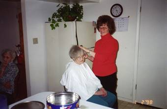

It’s July 9, 2001. I wanted to record a Saturday a couple of weeks ago. Ken’s Mom has need of round-the-clock care. She broke her arm, and since her mind is about gone, she gets angry, frustrated, and upset because of the pain and because of the cast which restricts her from being as independent as she wants to be so she tries to cut it off, break it off or soak it off. We have to watch her all the time and many times it is the nighttime which is the worst. Irven & Sandy and Ken & I had been taking turns watching her. Sandy was doing it during the weekdays and Ken & I would take turns staying the evenings with her & Irven, and Ken & I would do the weekends. (We call it “tend her”) as sometimes she is worse than a 2-year-old as a 2-year-old seems to understand and remember better than she does. She also gets angry and throws tantrums, like a 2-year-old, sometimes. Other times she is quiet, sweet and alert. We play “rummy”, her favorite card game with her sometimes and she is alert and even wins. I was amazed at how she figured out how to play with her broken arm as the cast goes from her hand to her shoulder. Her fingers stick out of the cast and part of her hand. She got another chair and spread the cards out on it. They were on the other side of her so we couldn’t see them and then she could maneuver them and be able to play with her one hand.
This one Saturday, Ken was staying with her while I stayed at home to clean, do laundry, trim the lawns, go grocery shopping, etc. Ken had mowed the lawns early before he went over to be with his mom. I decided to trim before it got too hot. When I came in to get a drink of water, the phone rang and Scott asked if I had remembered that it was Kylan’s birthday and that they had invited me to go swimming with them. I remembered his birthday, but forgot about going swimming. I asked them when they were going and they said “in about 15 minutes”. I told them I’d meet them at the Clearfield pool. I hurried and changed and drove over. We had a wonderful time and stayed for about 3 hours. Scott & Mishelle had bought a float tube for Kylan and he loved it and had a great time. We took turns playing with him and swimming. Scott did some great dives off the high diving board and the lower one - flips, backwards, etc. Scott was on the Layton High School diving team and went to state. I love to watch him. He’s modest so doesn’t want to do it if there are too many people. Mishelle and I even went off the lower diving board. She dove, but I just jumped off. I used to dive when I was younger, but I’m too nervous now. I really had a great time being with Scott, Mishelle and little Kylan and I love to swim - so it was great.
I gave them my gift and Kylan opened it and I left for home, changed back into my grubbies and was heading out to finish trimming the lawns when Jeff came up the stairs and asked if I would like to go see the movie “Pearl Harbor” with him. He said he had been calling his friends, but either they weren’t home or couldn’t go. I said “Oh Jeff, I’ve been playing for 3 hours and I’ve got so much to do”. He said “Oh Mom, you need to watch the Disney video “Jungle Book” more and be like Baloo - he just enjoyed life and doesn’t take it so seriously.” Jeff told me he would do the vacuuming when we got home. I said “Ok” and went up to change my clothes again. It was fun being with Jeff and visiting. He’s a special son and it was great “bonding” together (as he put it). The show was good, it was amazing to see what actually went on when Pearl Harbor was bombed by the Japanese. It only had a little “dog poop” (bad language and a love scene). I had been told by many good people that the show is incredible and doesn’t have anything “bad” in it, but there was. Boy, it’s getting harder and harder to go to movies anymore because of the language, sex and violence. Ken and I just mainly rent old movies on video instead of going to the movies.
Anyway, I still enjoyed it and enjoyed being with Jeff. I changed into my grubbies for the 3rd time and was on my way to at least finish trimming before it was too dark and the phone rang. It was Scott asking if I wanted to come over and watch Kylan open his presents and have cake and ice cream. I said to myself “what the heck”, that’s more important than house cleaning so I asked them to give me a few minutes to finish trimming and I would be over. I quickly finished trimming, changed clothes again and drove over to their home. Kylan was tired as he hadn’t had a nap, but he was cute most of the time anyway. Mishelle made him a cupcake and put a big candle in and lit it. She helped him blow it out and took the candle out and let him have to it. He didn’t grab it, instead he took little pieces off the edges of the cupcake with his thumb and index finger and ate it. Mishelle scared him accidently and he started crying so they got him down to open his presents. I got some cute pictures. It was fun being with them and I was glad they had invited me over. Ken was staying the night at his mom’s, but when I got home he called. He had called earlier and was worried since no one was home, wondering where I was. He prayed and had a good feeling that I was alright and the thought came to him that I might be at Scott’s. I’m sure thankful for prayer as I have prayed about him and the children different times when I have been worried about them and I get that comforting, peaceful feeling too and can relax. Well, I had a fun day - didn’t accomplish much on the list of things I had planned to do, but it was a wonderful day. Jeff did vacuum for me and I stayed up late getting a few things done.
Tuesday morning, September 11, 2001, on the way to work, I was listening to the radio when the news came on of the terrible tragedies which happened to the Twin Trade Towers in New York and the Pentagon in Washington D.C. Two planes were hijacked and flew right into the Twin Trade Towers in New York City. The Hijackers were illegal aliens from the Middle East - terrorists. I was devastated and could not believe what I had just heard. Then a third plane hit the Pentagon. We found out several days later that over 6,000 people were killed. That news has greatly affected not only the citizens of the United States of America, but the people throughout the world. We have been praying all week for the people who mourn the loss of their loved ones who were killed, for the firemen and rescuers, for those who were injured and for the President of the United States and the other leaders of our country. We have realized later that these twin towers could not have come down this way. A science professor at BYU told about that and the church had to tell him that he could not tell the public this as he was representing the Church. He wouldn’t stop, so he was fired. Of course, the media did not tell his information, now that he was fired. They would have made it a real story if they could have criticized the church. Satan has control of the media, he has great power in the world today. There are many who feel this destruction of the Twin Towers was done deliberately as since then our government have made such strict regulations and have more control over us. We had a good president in Ronald Regan, but since then it has gone downhill. But, we are told that in the last days there would be much wickedness, evil, corruption and confusion and it surely is.
Since then we have had a drug which is a powder sent in letters throughout the country and some have died from that drug. They feel these are from terrorist also.
This last week, Oct 20 - 23, 2001, there were so many terrible things reported in the news that it made me depressed and upset and I didn’t want to listen to the news anymore and I haven’t for a few days. The news told of a man & his wife who had separated. He took his two small children up in the mountains by Stockton (South of Tooele), shot and killed the baby boy in his car seat and when the little girl started running, he shot and killed her, and then he turned the gun on him and took his life. Another incident happened in Tooele - a little boy found his dad’s loaded rifle and shot and killed his little brother. In a daycare center a baby was killed. A couple of little boys (ages 3 & 4) killed the baby girl. The daycare lady had gone outside to check on the other children I understand. Another report told of two men who shot and killed two deer hunters -just to get their truck. They led the police on a chase and escaped for a couple of days, but were found and are in custody now. The deer hunters were young men in their 20's. The one was married and had 3 small children. This world is getting so wicked; it scares me for my children and grandchildren. I hope and pray they will be strong and can overcome the powers of Satan and stay strong in the gospel and stand for the right.
December 2001: Sandi & Terry invited our family to come to their cabin the day after Christmas and spend the rest of that week there with them. I think most, if not all, of our family were there. We had such a great time and Sandi & Terry were a great host and hostess. We played games, visited, went sleigh riding down the road by their house with their snowmobiles pulling us back up, ate great meals and just enjoyed relaxing and being together. We have a close family and we are so thankful for that. Everyone enjoys being together. While there, Mike was riding Sandi and Terry’s four-wheeler and road past a building lot that was for sale for $10,000. He was amazed at that price and told Ken and I about it. He took us back and we looked at the beautiful corner lot with lots of quaking aspen trees. We got the phone number to call. We thought that would be a great investment even if we didn’t build on it, but the thought crossed our minds that we might want to build on it. We prayed about it and both of us had a good feeling about it. Ken has always wanted to build our own home and this might be the right opportunity. We called and were able to purchase it.